Hero
The starting lineup — a quick overview of the CheapLive avatar project.
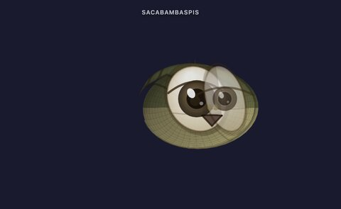
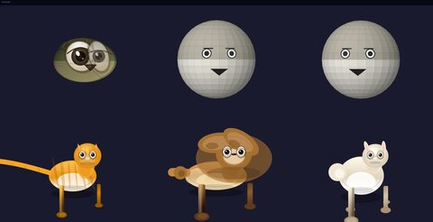
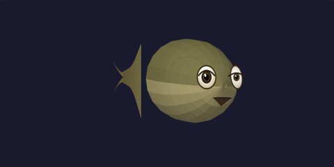
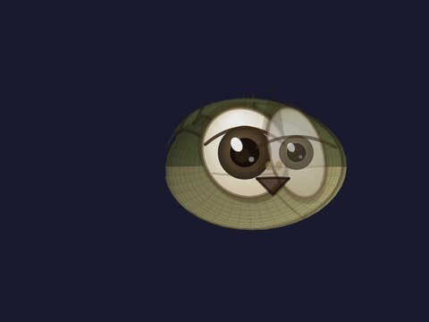
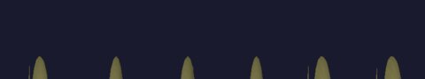
Sacabambaspis
Sacabambaspis, the ancient fish that became the main demo candidate. Plus the supporting cast: Bear, Dog, Fox, Rabbit, and a Sphere.
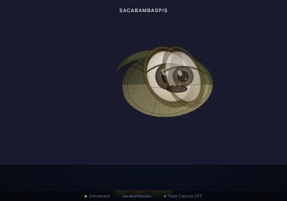
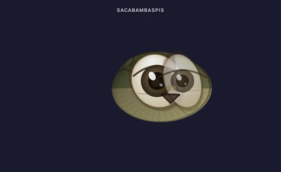
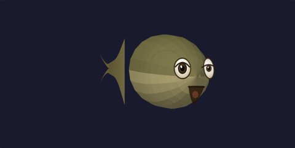
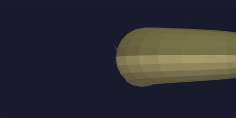
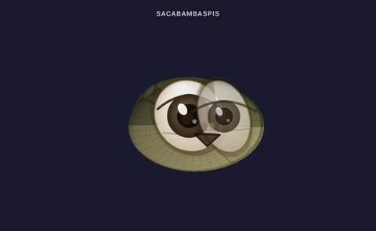
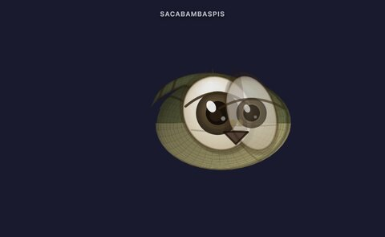
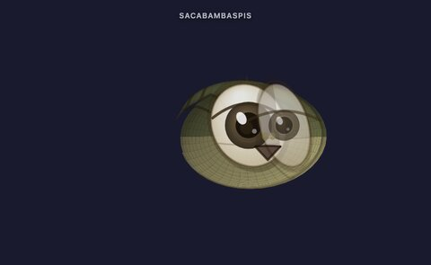
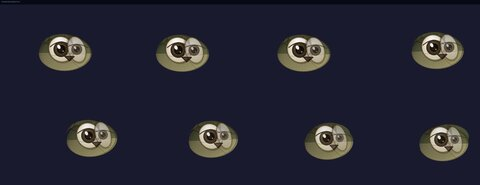
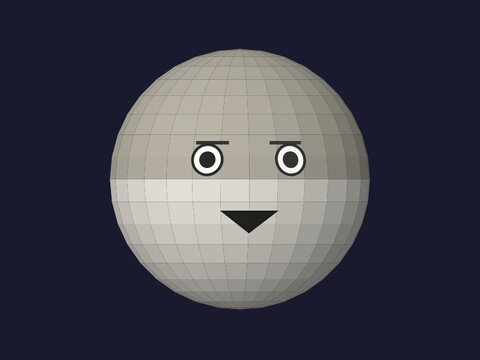
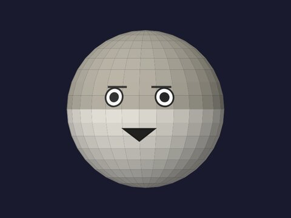

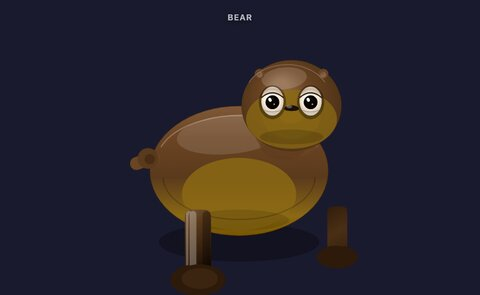
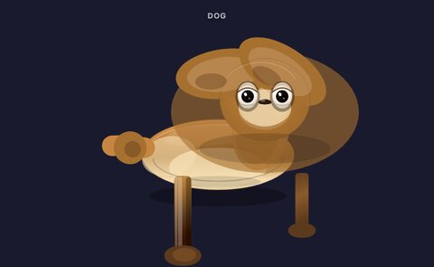
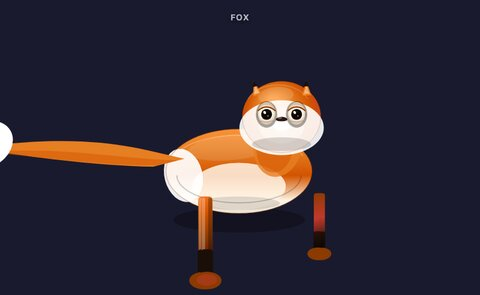
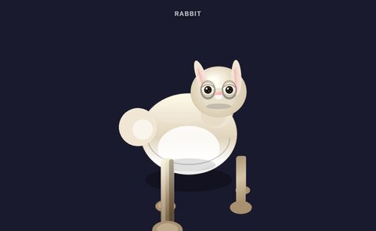
Android
Real Android tablet screenshots — the app, receiver, and control pages running on actual hardware.
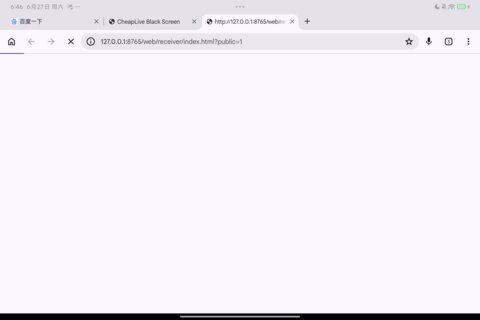
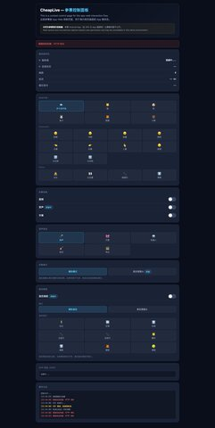
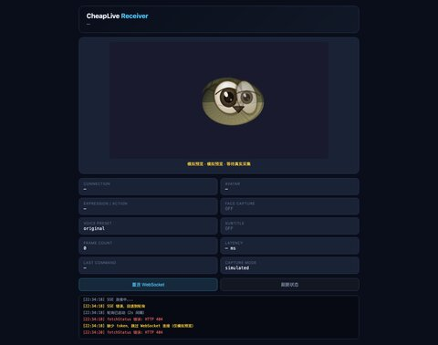
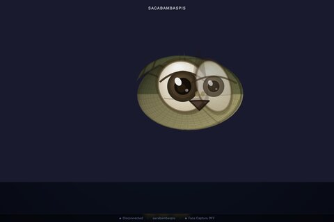
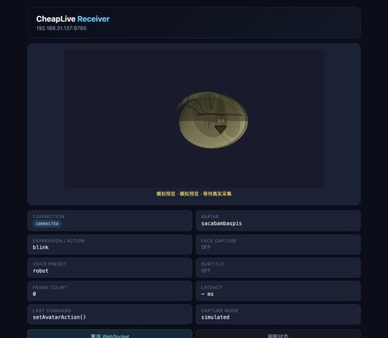
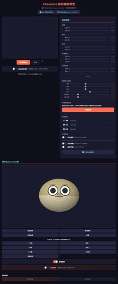
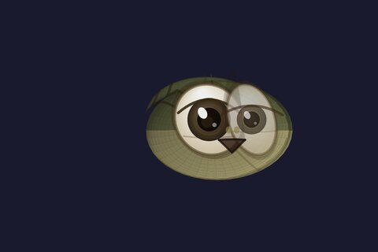
Black Screen
The safest screen is sometimes no screen. Black screen fallback evidence.
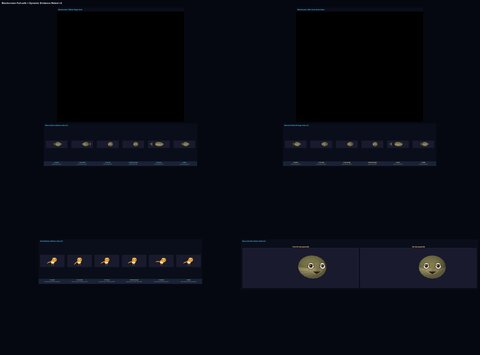
Motion
Motion evidence strips and bodycheck GIFs — proof that the avatars can actually move.
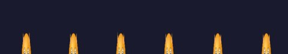
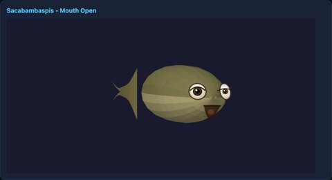

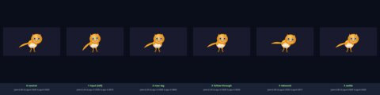
Cat-Owl Failure
The Cat-Owl Failure Case — when "cat" became "owl". A funny but instructive design disaster.
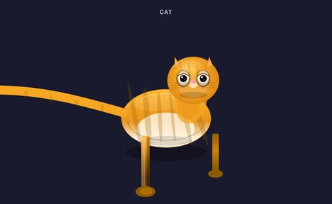
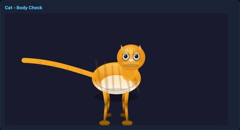
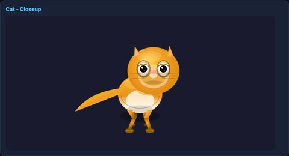
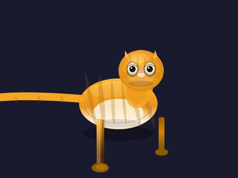
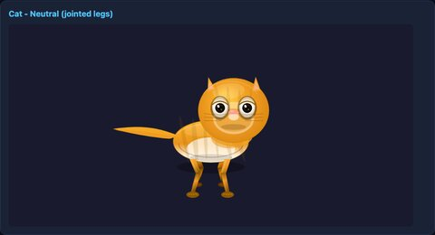
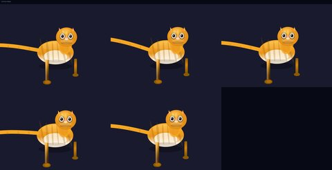
Bloopers
The Failure Museum — distortions, debug leaks, and other historical artifacts that should not have happened.
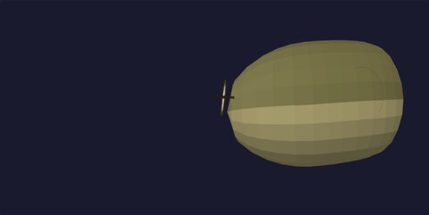
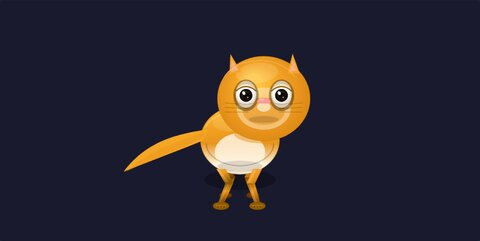
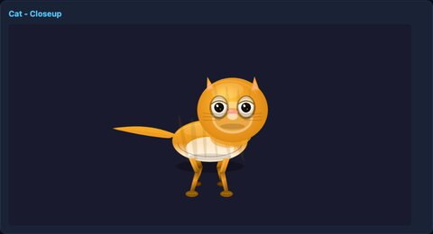
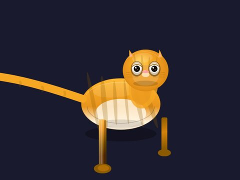
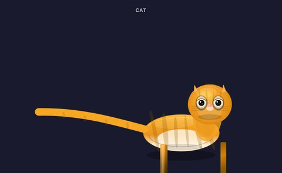
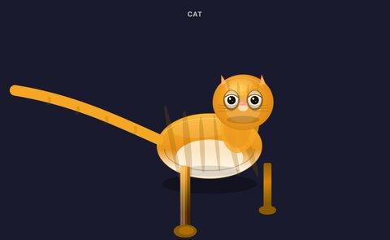
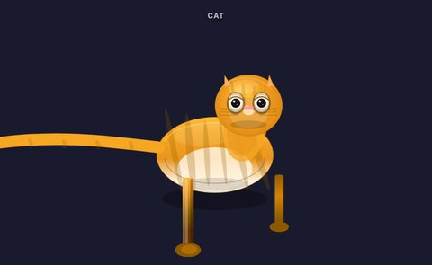
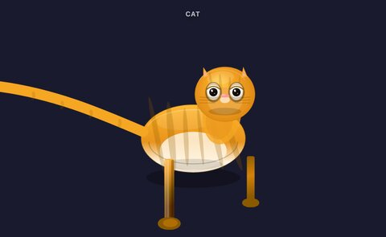
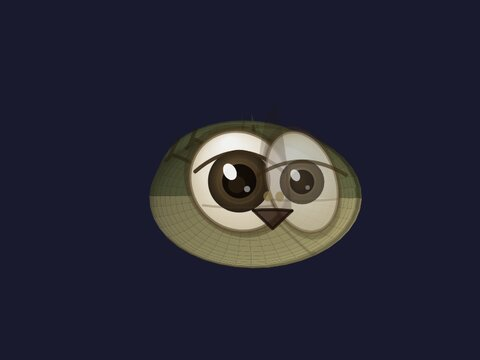
Contact Sheets
Contact sheets and reference images — species readability, visual simplification, and architecture.
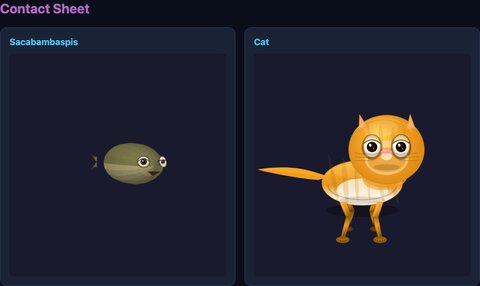
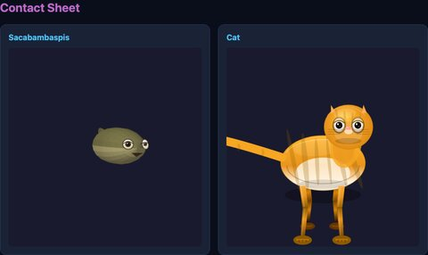
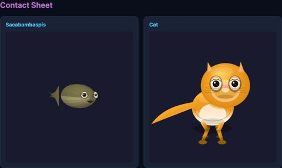
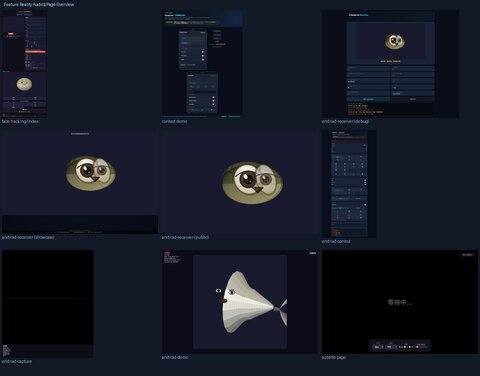
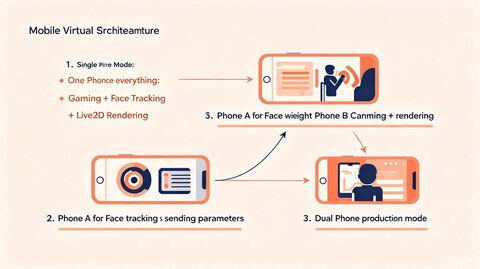
Subtitle
Subtitle integration on the receiver page.
Demo
Demo showcase pages — the avatar in action.
Full internal archive is kept as a separate zip/cloud folder.
This public page is curated for demo viewing.
Total internal archive: 474 assets. This page shows: 61.